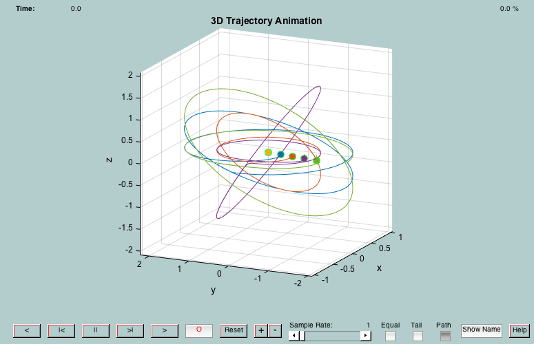

Run a formation flying simulation with "DFFSim".
A reconfiguration is performed using decentralized formation flying (DFF) guidance and control algorithms developed by PSS under NASA SBIR contracts.
This demo is initially set up to do a 4-satellite reconfiguration maneuver from an out-of-plane leader follower (repeated groundtrack) formation to a dual-plane projected circle formation with the reference on one circle.
Several parameters may be modified by the user, including the number of satellites, the simulation time-step, and the initial and final states of the cluster.
Since version 7. ------------------------------------------------------------------------ See also WrapPhase, DFFSim, RotateState, GenerateTeamGoals, Goals2DeltaElem, M2Nu ------------------------------------------------------------------------
Contents
- demo parameters
- initial state of the cluster (may be changed by user, see GenerateTeamGoals for more info)
- desired state of the cluster (may be changed by user, see GenerateTeamGoals for more info)
- Reference Orbit
- reference orbital element set
- Geometric Goals of the Cluster
- Compute the original state of the cluster
- compute initial orbital elements
- run the simulation
%--------------------------------------------------------------------------- % Copyright (c) 2003 Princeton Satellite Systems, Inc. % All rights reserved. %--------------------------------------------------------------------------- disp('... initializing demo parameters'); %%%%%%%%%%%%%%%%%%%%%%%%%%%%%%%%%%%%%%%%%%%%%%%%%%%%%%%%%%%%%%%%%%%%%%%%%%%% %%%%%%%%%%%%%%%%%%%%%%%%%%%%%%%%%%%%%%%%%%%%%%%%%%%%%%%%%%%%%%%%%%%%%%%%%%%% % THE FOLLOWING DATA MAY BE MODIFIED BY THE USER
... initializing demo parameters
demo parameters
%---------------- nSC = 4; % number of spacecraft dT = 20; % integration time step [sec] useJ2 = 0; % use J2 or not? planTime = 0; % when to plan? [orbits] nOrbits = 6; % number of orbits to simulate [orbits]
initial state of the cluster (may be changed by user, see GenerateTeamGoals for more info)
%-----------------------------
fType_Init = 2;
fSize_Init = 0.3;
desired state of the cluster (may be changed by user, see GenerateTeamGoals for more info)
%--------------------------------------------------------------------------------------------
fType_Des = 10;
fSize_Des = 1.0;
Reference Orbit
%---------------- a = 7000; % semi-major axis [km] i = 60; % inclination [deg] W = 45; % right ascension [deg] w = 120; % arg of perigee [deg] e = 1e-5; % eccentricity M = 30; % mean anomaly [deg] % END OF USER-MODIFIABLE DATA %%%%%%%%%%%%%%%%%%%%%%%%%%%%%%%%%%%%%%%%%%%%%%%%%%%%%%%%%%%%%%%%%%%%%%%%%%% %%%%%%%%%%%%%%%%%%%%%%%%%%%%%%%%%%%%%%%%%%%%%%%%%%%%%%%%%%%%%%%%%%%%%%%%%%%
reference orbital element set
%------------------------------
i = i*pi/180;
W = W*pi/180;
w = w*pi/180;
M = M*pi/180;
th = WrapPhase( M2Nu( e, M ) + w );
q1 = e*cos(w);
q2 = e*sin(w);
el0 = [a, th, i, q1, q2, W];
Geometric Goals of the Cluster
%------------------------------- disp('... computing the geometric goals of the cluster'); teamID = 99; angRes = 5*pi/180; teamGoals = GenerateTeamGoals( el0, fType_Des, fSize_Des, nSC, teamID, angRes );
... computing the geometric goals of the cluster
Compute the original state of the cluster
%------------------------------------------ disp('... computing the initial state of the cluster'); tG0 = GenerateTeamGoals( el0, fType_Init, fSize_Init, nSC, teamID, angRes ); clear cG0; k = 0; for i=1:tG0.nU, k = k+1; cG0(k) = tG0.geometry(i); u = k; for j=1:tG0.constraints(i).nDuplicates, k = k + 1; cG0(k) = RotateState( cG(u), tG0(i).phi(j) ); end end
... computing the initial state of the cluster
compute initial orbital elements
%--------------------------------- dEl0 = zeros(nSC,6); for i=1:nSC dEl0(i,:) = Goals2DeltaElem( el0, cG0(i) ); end
run the simulation
%------------------- disp('... running the simulation'); [t,el,fH,xH,dEl,dElDes] = DFFSim( el0, dEl0, teamGoals, dT, planTime, nOrbits, useJ2 ); clear sc; for i=1:nSC+1, sc(i).r = xH{i}(1:3,:); sc(i).v = xH{i}(4:6,:); sc(i).t = t; end %-------------------------------------- % PSS internal file version information %--------------------------------------
... running the simulation *** 1 orbit complete *** *** 2 orbits complete *** *** 3 orbits complete *** *** 4 orbits complete *** *** 5 orbits complete *** Elapsed time is 15.685375 seconds.